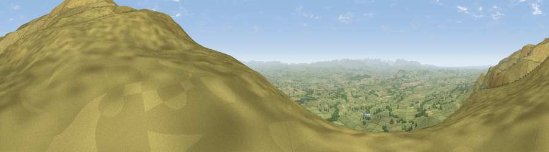

Viewpoint near Blencarn
#2167 in England · top 2% of its area beats it · near BlencarnThe view, rendered

A 360° render of this exact spot computed from the terrain model, tree cover and land cover — summer colours, afternoon light, calibrated against photographs of famous viewpoints. Real trees, hedges and buildings will differ in detail.
The panorama
Grey silhouette: terrain skyline in each direction (720 bearings, Earth curvature and refraction included). Dashed green: skyline with trees (+15 m) and buildings (+8 m) as obstacles. Blue strip: how far the ground is visible on each bearing.
Where the view opens
Wedge length = distance to the farthest visible ground on that bearing (vegetation-aware). Rings at 10, 25 and 50 km.
What fills the view
92% grassland · 4% woodland · 4% cropland
Angular shares of the visible panorama (visual magnitude), not map area. Landscape diversity 0.15 (0–1 Shannon).
Key numbers
More beautiful places nearby
The staircase of upgrades: each row has a higher view potential than everything closer. Driving times are estimates from straight-line distance, calibrated against real road routing — check an actual route before setting out.
| Place | Direction | Drive | Score |
|---|---|---|---|
| Cross Fell | NE · 2 km | ~5 min | 78.7 |
| Viewpoint near Plumpton | W · 16 km | ~28 min | 78.9 |
| Viewpoint near Watermillock | WSW · 24 km | ~39 min | 82.6 |
| Viewpoint near Watermillock | WSW · 24 km | ~40 min | 83.5 |
| Viewpoint near Legburthwaite | WSW · 37 km | ~56 min | 83.8 |
| Viewpoint near Legburthwaite | WSW · 38 km | ~57 min | 84.5 |
| Skiddaw South Top | W · 41 km | ~60 min | 85.8 |
| Viewpoint near Applethwaite | W · 42 km | ~61 min | 86.7 |
54.69218, -2.51638 · source: screening · position refined by local search. Computed location — check access rights before visiting.